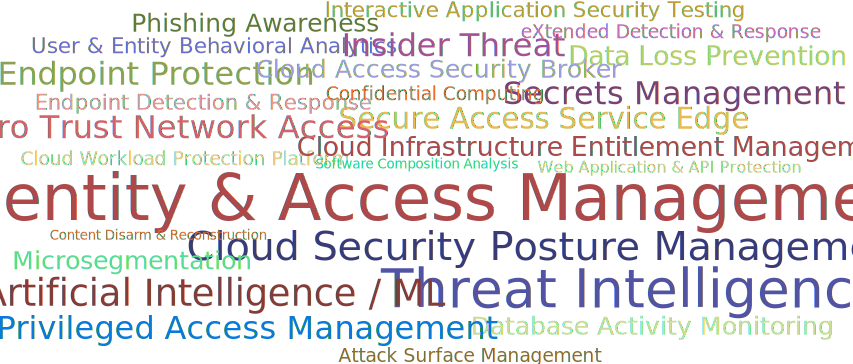

A framework created by @sounilyu to help you expertly navigate the cybersecurity landscape
Apply here for the Inaugural
Cyber Defense Matrix Conference:
https://conference.cyberdefensematrix.com
Imagine going into a grocery store to shop for Thanksgiving dinner, but instead of seeing nice, orderly aisles, you see a massive pile of food in the middle of the grocery store. Finding the ingredients that you need to make dinner is going to be extremely hard because there’s no organizational system helping you understand where things are. The disorganization makes it very difficult to find what you need and compare competing products.
The cybersecurity vendor marketplace is like this disorganized grocery store. A proof of this assertion can be seen by looking at the vendor hall at any major security conference. The cacophony of sounds from vendors hawking their wares, the confusing language of the vendor’s marketecture, and the lack of any semblance of organization (aside from biggest to smallest) does not help buyers understand what they need or where to find it.
Because the cybersecurity community does not use consistent terminology to describe what we need, there is much confusion about what many vendor products actually do. Instead of a clear articulation of a product’s capabilities, we are bombarded with overused, trendy jargon that usually leaves us wondering if the product can really solve any of our problems. Some security teams even organize themselves according to the jargon. We need to stop letting marketing pitches dictate our terminology and not lose sight of the more bland descriptors that actually tell us what something does.
The Cyber Defense Matrix helps us understand what we need organized through a logical construct so that when we go into the security vendor marketplace, we can quickly discern what products solve what problems and be informed on what is the core function of a given product. In addition, the Cyber Defense Matrix provides a mechanism to ensure that we have capabilities across the entire spectrum of options to help secure our environments.
Although the Cyber Defense Matrix was initially created to help organize security technologies, many other use cases have been discovered to help build, manage, and operate a security program. This website will capture these use cases and their implementations to help security practitioners mature their security programs.
The first dimension captures the five operational functions of the NIST Cybersecurity Framework
| IDENTIFY | PROTECT | DETECT | RESPOND | RECOVER |
|---|---|---|---|---|
| Inventorying assets and vulns, measuring attack surface, prioritizing, baselining normal, threat modeling, risk assessment | Preventing or limiting impact, patching, containing, isolating, hardening, managing access, vuln mitigation | Discovering events, triggering on anomalies, hunting for intrusions, security analytics | Acting on events, eradicating intrusion, assessing damage, forensic reconstruction | Returning to normal operations, restoring services, documenting lessons learned, resiliency |
The second dimension captures five assets classes that we try to secure
| DEVICES | APPS | NETWORKS | DATA | USERS |
|---|---|---|---|---|
| Workstations, servers, phones, tablets, storage, network devices, IoT infrastructure, etc. | Software, interactions, and application flows on the devices | Connections and traffic flowing among devices and apps, communication paths | Content at rest, in transit, or in use by the resources to the left | The people using the resources listed to the left |
When these two dimensions are put into a grid, we arrive at a five-by-five matrix called the “Cyber Defense Matrix”
There is one more important piece of this matrix. At bottom of the grid, we show a continuum that characterizes the degree of dependency on technology, people, and process as we progress through the five operational functions of the NIST Cybersecurity Framework. TECHNOLOGY plays a much greater role in IDENTIFY and PROTECT. As we move to DETECT, RESPOND, and RECOVER, our dependency on TECHNOLOGY diminishes and our dependency on PEOPLE grows. Throughout all five operational functions, there’s a consistent level of dependency on PROCESS. This continuum helps us understand where we might have imbalances in our reliance on PEOPLE, PROCESS, and TECHNOLOGY when trying to tackle our cybersecurity challenges.
There are several use cases for the Cyber Defense Matrix, which can be found in my slides presented at various conferences. Here are a few examples.
I believe that this matrix is a useful model to understand a broad range of cybersecurity practices. In future updates to this website, you will find detailed insights on the Cyber Defense Matrix and examples of how to leverage it to address the challenges that we face in cybersecurity.
If you discover a new use of the Cyber Defense Matrix, I would love to hear about it. Likewise, if you find a problem with the matrix in that it doesn’t seem to properly describe something that we do in cybersecurity, please point that out, and I’ll either adjust the matrix or clarify how that perceived discrepancy can be addressed or explained through the matrix.
I provide cybersecurity consulting services using the Cyber Defense Matrix framework. Contact me through the form below if you want me to implement this framework into your security program.
Please also feel free to contact me if you have ideas about new use cases. I promise I won't spam you.
If you want to read more about the Cyber Defense Matrix, you can grab a copy of the physical book at Amazon or the digital version at JupiterOne Press